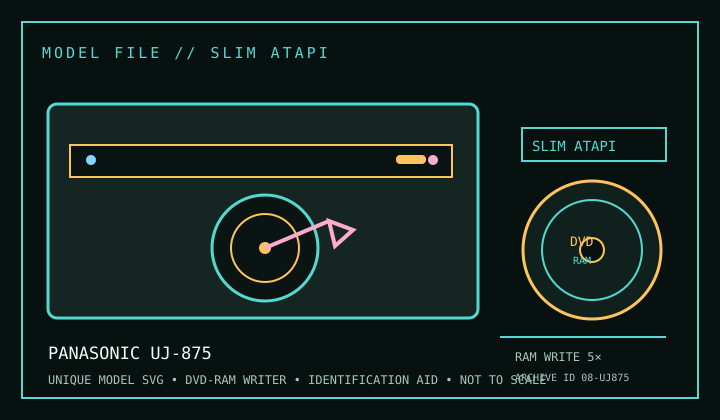

[ DVD-RAM WRITERS // IDENTIFIED MODEL ]
Panasonic UJ-875
DVD-RAM read/write support with model-specific optical-media and host details below. Maximum speeds are ratings, not sustained guarantees; firmware, media revision and operating mode matter.

IDENTIFICATION: Match the full label, suffix, OEM part number and firmware against the cited documentation before installing, burning or using this mechanism for preservation reads. Closely named revisions are not assumed interchangeable.
Documented specifications
| Catalog subcategory | DVD-RAM writers |
|---|---|
| Exact model | Panasonic UJ-875 |
| Readable media | CD-ROM, CD-R/RW; DVD-ROM, DVD±R, DVD±RW, DVD±R DL and DVD-RAM. DVD-RAM read/write ceiling is 5×. Use bare, uncartridged DVD-RAM media only: a slot-loading mechanism cannot accept a disc cartridge; check supported DVD-RAM version against the installed firmware. |
| Recordable media | DVD-RAM up to 5×; DVD±R up to 8×; DVD+RW up to 8×; DVD-RW up to 6×; DVD±R DL up to 6×; CD-R up to 24×; CD-RW up to 24×. |
| DVD-RAM rating | Read/write up to 5×; actual operation depends on supported DVD-RAM version, disc condition, firmware and host software. |
| Interface / mechanics | Slimline ATAPI (PATA); 12.7 mm internal slimline slot-loading. Check mounting, connector pinout, bay/caddy and power before installation; this record does not claim an unverified dimension or adapter pinout. |
| Host / software compatibility | Internal 12.7 mm slimline slot-loading laptop drive with a slim ATAPI connection, not a standard 5.25-inch desktop connector. Host requires a matching slimline optical-drive bay/interposer and compatible firmware/BIOS. Insert bare discs only, never a cartridge. DVD-RAM random write needs supported media and host UDF/packet-writing software; OEM notebook firmware can restrict media behavior. |
| Model distinction | UJ-875 is a slimline ATAPI slot-in model; it is not the later SATA Panasonic slim-drive family. OEM suffixes and bezel/connector assemblies vary. |
Media and host notes
- DVD-RAM is a rewritable random-access format, but this slot-loading UJ-875 accepts bare discs only; do not insert DVD-RAM cartridges. Match the bare disc version to the exact firmware-supported media list.
- For DVD-RAM drag-and-drop or packet-written use, confirm host UDF/filesystem and application support. A drive that can write DVD-RAM does not guarantee operating-system mounting or packet writing.
- Internal 12.7 mm slimline slot-loading laptop drive with a slim ATAPI connection, not a standard 5.25-inch desktop connector. Host requires a matching slimline optical-drive bay/interposer and compatible firmware/BIOS. Insert bare discs only, never a cartridge. DVD-RAM random write needs supported media and host UDF/packet-writing software; OEM notebook firmware can restrict media behavior.
- Record drive label, firmware, controller, OS, software, disc version, write mode and verification result with each preservation image; retain checksums and error logs.
Protect recordable discs from heat, sunlight, scratches and contamination. Handle by the edge or hub and store in a case. Test each media batch before relying on it as the sole copy.
Sources
- OWC/MacSales — Panasonic UJ-875Model-specific product specification listing for the slim ATAPI drive and supported recording media.
- Panasonic UJ-875 slim-line drive datasheet (PDF)Model-labelled slim-drive specification sheet; compare connector and mechanical details with the host.
- Panasonic UJ-875 bare DVD writer listingModel-specific bare-drive listing; corroborates the slot-in form, which is incompatible with inserted disc cartridges.
- Ecma-330 — 120 mm DVD-RAM disksDisc-format reference; supported cartridges/media depend on drive tray and OEM configuration.